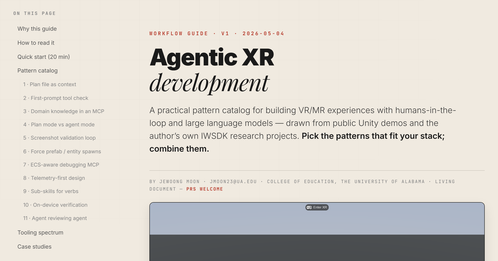
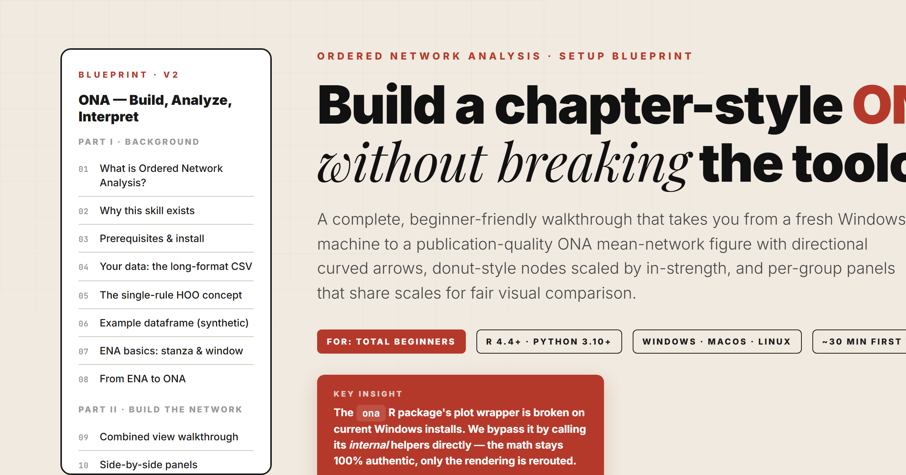
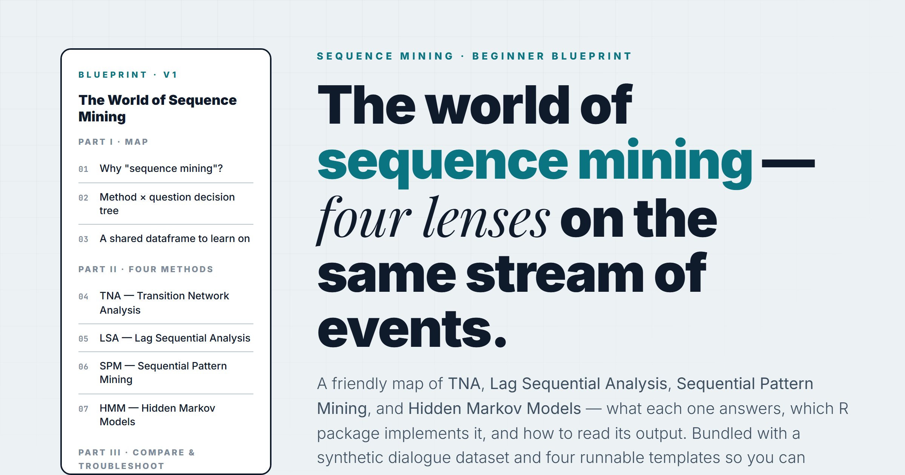
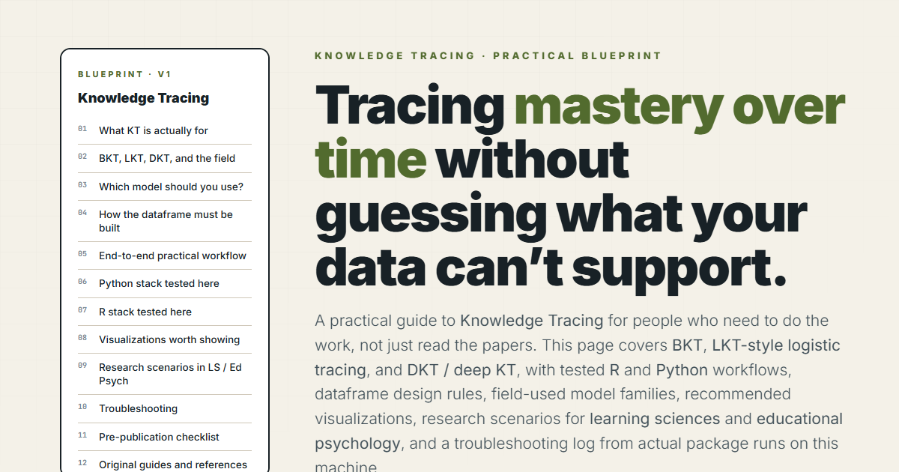
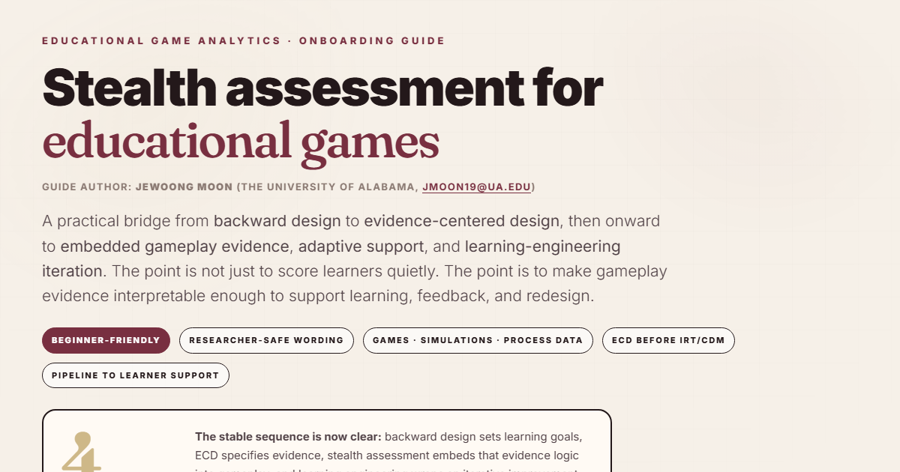

Self-contained, citation-free walkthroughs for the methods we use across our research and teaching. Each guide is a single HTML page you can read, link, or fork.

Eleven patterns for building VR/MR with humans-in-the-loop and large language models. Plan files, custom-tool checks, domain MCPs, screenshot loops, ECS-aware debugging, agent-reviewing-agent — illustrated through Unity (Dilmer Valecillos’ basketball MR), IWSDK (Virtual Makerspace, Circuit Playground), Three.js browser games, and the GPT-5.5 vibe-coding wave from X. Includes a Quick Start, Blender MCP asset pipeline, agentic failure-mode catalogue, researcher-specific concerns, glossary, and public-safe starter templates.

A more intuitive, workflow-first ONA guide: it introduces the original chapter and article foundations in detail, then turns them into reusable templates, troubleshooting rules, sanitized skill examples, and downloadable synthetic starter data for agentic analysis.

Four lenses on the same stream of events. Method × question decision tree, end-to-end R templates for each, bundled synthetic dataset, and a troubleshooting matrix. Cool-tone blueprint.

A practical guide to tracing mastery over time: dataframe design, tested R/Python packages, field-used KT families, strong visualization choices, research scenarios for learning sciences and educational psychology, and troubleshooting from real package runs.

A bridge from backward design to ECD, then onward to stealth assessment and learning engineering. Focused on how gameplay telemetry becomes defensible evidence for feedback, adaptation, and redesign rather than just hidden scoring.
A living index of presentation folders under /presentations/. New decks appear here automatically when they include an index.html, with thumbnail previews when a thumbnails/ folder is present.